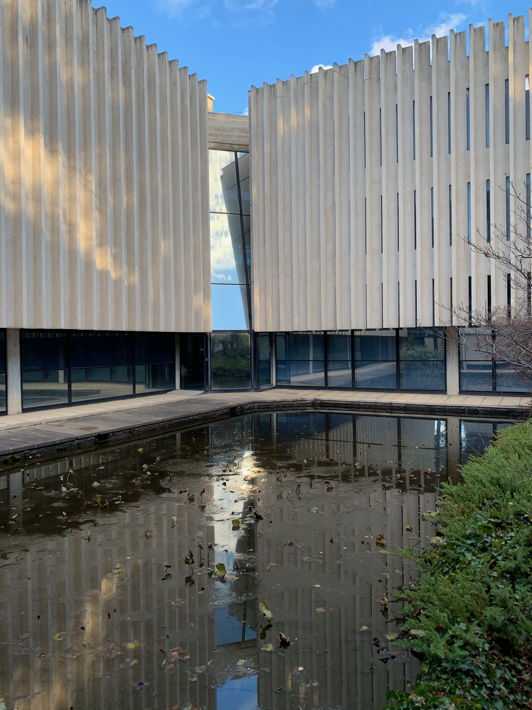
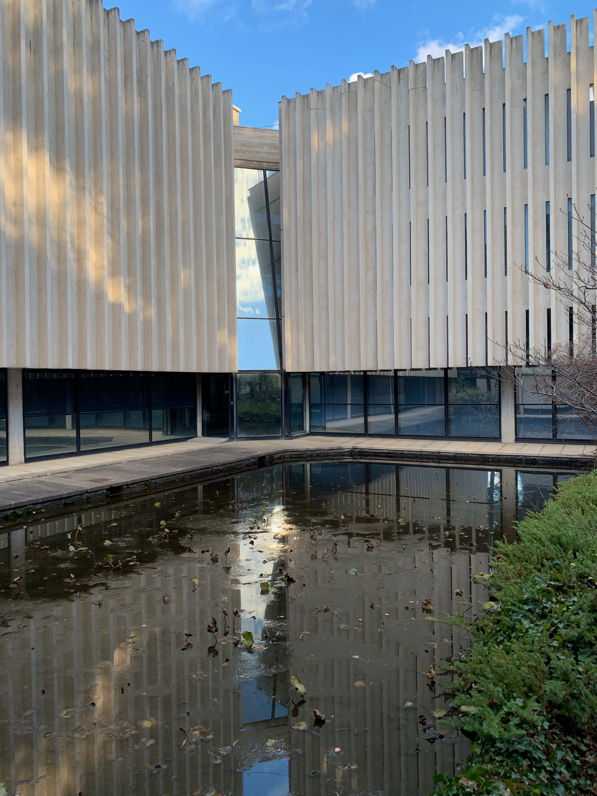

Overview
Churchill House was designed by Robin Boyd for the Winston Churchill Memorial Trust of Australia in 1969-70 and construction was completed in 1971. The building is an example of the Late Twentieth-Century Brutalist Style (1960-) with its large areas of blank wall and off-form concrete.
The complex comprises a number of components: the main building with its east and south wings, the separate north wing or pavilion, the pool and the rear carpark. The main building forms an L shape in plan, and with the north wing it encloses on three sides a courtyard in which the pool is located. The main building is of three storeys with a four storey lift tower at the southeast corner, the north wing is of two storeys, and the carpark is two storeyed.


Main Building
The main building displays several different elevational treatments. The elevations facing onto the pool area feature floor to ceiling glass with minimal black metal frames to the lowest level, and precast vertical panels on the upper two storeys. Each panel has a projecting fin and are relatively narrow, with the overall affect being of closely spaced vertical fins. Beside the fins are narrow, slot windows providing minimal outlook onto the pool area.
The south and east elevations are quite different in character having long horizontal sections of flush-mounted glazing set in minimal black metal frames, with timber-textured off-form concrete spandrels between storeys. The base course of the elevation is a large section black-coated steel beam. Several window-mounted airconditioners are located on the south elevation. The blank end walls of the wings and the lift tower are off-form, timber-textured concrete with incised storey lines.
At the junction of the two wings are the foyers for each floor as well as the service core including the lift. Apart from the off-form concrete walls of the service elements, the foyers feature glazing set in black metal frames which extends the full height of the building. At the ground floor level the glazing is vertical but above that for the remaining two storeys it is sloping.
The building has concrete slab floors which are either carpeted or finished in slate. Some interior walls are textured, off-form concrete similar to the exterior. Other walls are lightweight partitions. There is a mixture of ceiling treatments: off-form concrete, suspended ceilings and set plasterboard. Many of the interior fitouts appear relatively modern and are not original.
The roof of the main building is set behind a parapet and appears to be graded concrete with a membrane coating.

 


North Wing
The north wing replaces an earlier pavilion on the same location. The current wing is a two storey structure with a flat metal deck roof set behind a parapet. The wing has an encircling steel colonnade which supports the roof and parapet. The walls are set back from the colonnade and feature flush-mounted glazing set in thin black metal frames, with textured off-form concrete spandrels, similar to the south wall of the south wing. There is an enclosed link between the north and east wings at the ground floor level.
Pool Area, Carpark and Landscaping.
The pool area is lower than the surrounding site, and being mostly enclosed by the wings, has the quality of a sunken courtyard. The pool area is reached by a large flight of concrete steps from the west, and features a pond which borders a large, raised central island which is reached from one side by a set of bridging steps. The island has concrete paving, garden beds and silver birch trees, and is the location for a large fibreglass statue of Sir Winston Churchill.
The carpark is constructed in off-form concrete, with walls displaying the texture of the timber formwork.
Churchill House has a number of landscape/garden areas. At the front (west) of the building is an open lawn area and either side are mixed native/exotic plantings. The pool area contains numerous trees and shrubs, again of mixed native/exotic species. A small courtyard to the southeast of the main building features bamboo.